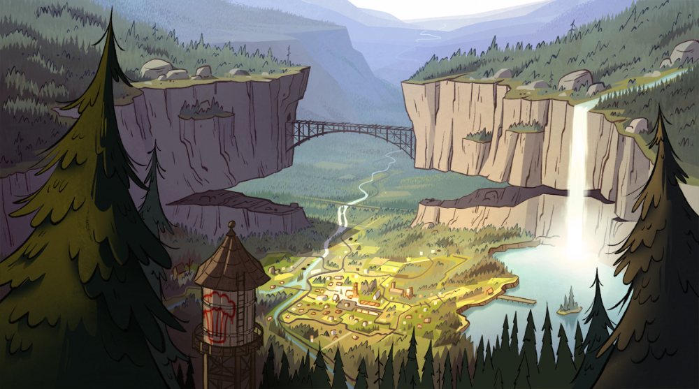
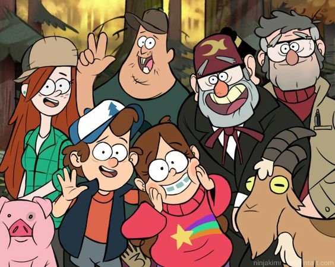

Uma das principais características de Gravity Falls é o destaque que mistérios possuem na trama. A série possui tantos mistérios que eles não são limitados apenas à histórioa. Ao final de cada episódio, durante os créditos finais, é exibido um criptograma para que a audiência possa praticar suas habilidades investigativas e de solução de enigmas.
A dica de como resolvê-los se encontra no sussurro no final do tema de abertura. Para isso, é necessário ouvir o sussurro de trás para a frente. A seguir se encontram as cifras utilizadas para resolver os enigmas da primera temporada.

A cidade da Verdade
Tasmbém a cidade de Gravity Falls é baseada em uma cidade real dos Estados Unidos. Quando criança, Hirsch fazia várias viagens com sua família pelo noroeste dos Estados Unidos, e muitas vezes passavam pela cidade de Boring, no Oregon. Em inglês, Boring pode significar "entediante", mas Hirsch se recusava a acreditar que essa cidade fosse assim. Imaginava que seria um lugar cheio de aventuras e mistérios, pensamentos que resgatou anos depois quando criou o conceito de Gravity Falls
Sobre os Personagens

Os própios protagonistas da série, Dipper e Mabel, foram baseados em Alex Hirsch e sua irmã gêmea, Ariel Hirsch. Além deles, Tivô Pines também foi inspirado no avô dos gêmeos.
Soos Ramirez foi baseado em Jesus Chambrot, um colega de turma de Alex na CalArts. Alex dizia que todo mundo sabia que Chambrot era o cara mais velho da turma, mas ninguém sabia dizer, com precisão, quantos anos ele tinha.
Até mesmo waddles, o adorável porco de estimação de Mabel, foi inspirado no porco de esimação de uma das roteiristas da série.